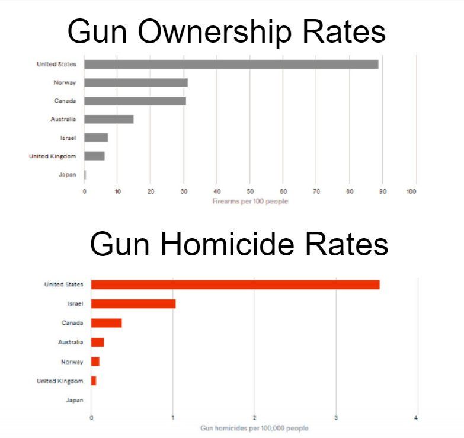
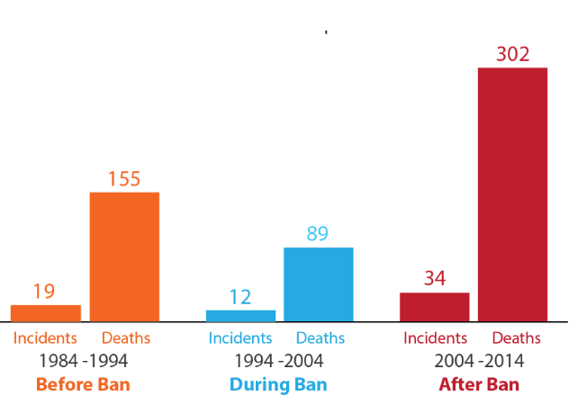

In United States has been on the rise of gun ownerships. Guns have been used and abused since the begining of the history of the USA. They are only becoming more and more popular. This makes mass shootings and gun violence more frequent.
 As we analyze the data between the the amount of guns are owned and murders around the Globe, we can see there's a connection between the 2 pieces of data. The United States have the highest numbers in both datas. Guns are supposed to be making us safer but we have the most gun violence
 These numbers showed the deaths decreased when the ban was proposed. But when the ban expired it increased unimaginably.
The rise in numbers in mass shootings are rapidly increasing. It is so frequent that you have more chances of being in a mass shooting is 1 in 11,125 as an American. Your chances of being struck by lightning is 1 700,000. Just to show you how big the chances are.